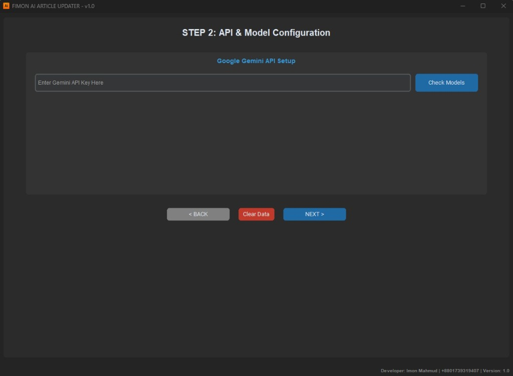
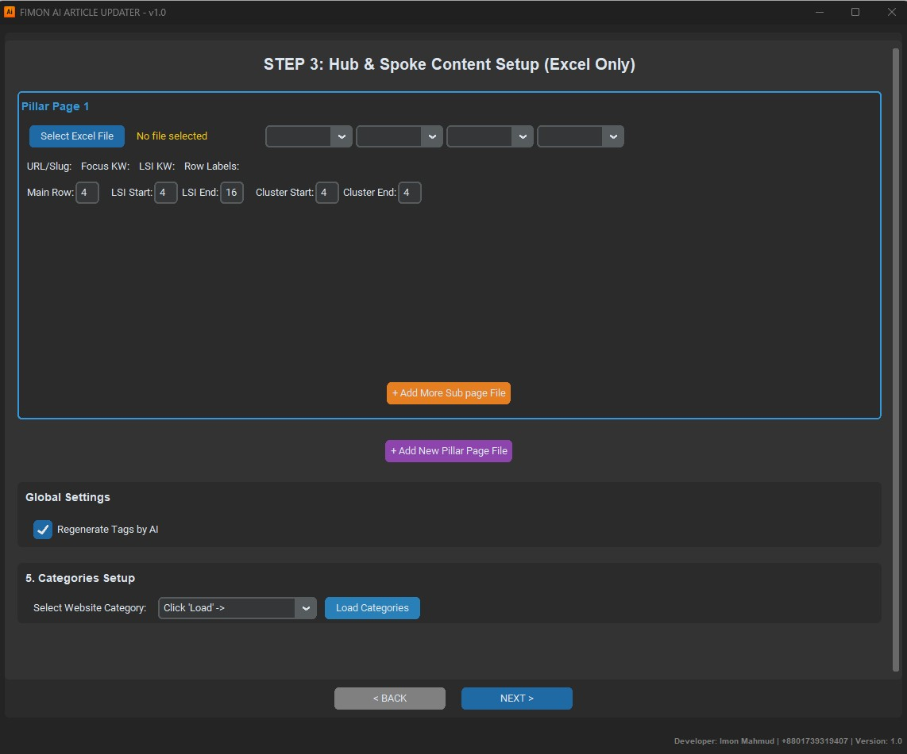

1. Executive Overview
Fimon AI Article Updater & WordPress Publisher (v1.0) is an enterprise-grade automation framework engineered to eliminate manual content creation bottlenecks. Built using decoupled object-oriented Python architectures, it converts complex spreadsheet topic matrices into SEO-optimized, contextually linked WordPress articles. The framework incorporates advanced error-handling loops, thread-safe logging buffers, and native Gutenberg block serialization to guarantee high reliability during high-stress publishing batches.
✔ For Technical Recruiters & Engineers
Demonstrates advanced proficiency in asynchronous Python threading, decoupled Model-View-Controller (MVC) architectural patterns, resilient HTTP session management with exponential backoff retries, and clean REST API integrations.
★ 100% Public Open-Source Asset
A turn-key open-source content engine available directly on GitHub. Enables digital publishers and engineering teams to automate article generation, metadata injection, and site structure mapping with zero licensing fees.
2. System Architecture & Data Pipeline
The processing infrastructure manages transactional pipelines asynchronously. Graphical layout states transfer instructions into thread-safe worker pools without slowing window render times, guaranteeing fluid control environments during batch generation tasks.
Figure 1: Full-duplex asynchronous compilation and Gutenberg-block REST API execution flow.
3. Technical Capabilities & Algorithmic Deep Dive
The source architecture implements structural isolation layers to guarantee transactional stability across network boundaries. Rather than basic raw HTTP posts, the environment utilizes custom session adapters, retry pools, and automated DOM sanitizer passes.
// Resilient WordPress REST Session Layer with SiteSEO Injection
session = requests.Session()
retries = Retry(total=5, backoff_factor=1.5, status_forcelist=[429, 500, 502, 503, 504])
session.mount('https://', HTTPAdapter(max_retries=retries))
payload = {
'title': article_title,
'content': gutenberg_block_content,
'status': 'publish',
'categories': [target_category_id],
'meta': {
'_siteseo_titles_title': focus_keyword,
'_siteseo_titles_desc': generated_meta_description
}
}
response = session.post(f"{wp_url}/wp-json/wp/v2/posts", json=payload, auth=(username, app_password))
Granular Subsystem Implementations
<!-- wp:paragraph -->) for clean editor compatibility.
threading.RLock locks across runtime shared structures, preventing race conditions when writing active session logs or reading Excel profile parameters concurrently.
4. Environment Configuration & Runtime Setup
The application is engineered to run seamlessly on both desktop workstations and headless server automation pipelines:
Runtime Requirements
- Python Environment: Python 3.9+ (Python 3.11 Recommended)
- Core Libraries:
customtkinter,google-generativeai,pandas,openpyxl,beautifulsoup4,requests - API Keys: Google Gemini API Key (Accessible via Google AI Studio)
- WordPress Authorization: Application Passwords enabled over HTTPS
Deployment Options
- Desktop GUI Mode: Standalone CustomTkinter dark-mode graphical desktop application
- Headless Server Mode: Docker containerized execution with headless script worker dispatchers
- Batch Matrix Mode: Excel-driven automated multi-site, multi-pillar simultaneous deployments
- Repository Access: Full source code, documentation, and requirements.txt on GitHub
5. Advanced Core Technical Features
Hub & Spoke Content Strategy Parser
Extracts raw spreadsheet tables and maps individual cell coordinates to isolate primary focus terms, URL slugs, long-tail LSI keywords, and cluster structures into separate validation queues.
Zero-Orphan Programmatic Linking
Calculates structural parent-to-child paths inside application memory before content generation, ensuring conversational anchor tags and balanced internal link distributions.
Native Gutenberg Block Compilation
Transforms raw LLM HTML outputs into clean Gutenberg block comment wrappers, formatting headings, paragraphs, lists, and callouts for seamless WordPress editor compatibility.
Automated SEO Metadata Injection
Hooks directly into popular WordPress SEO plugins (SiteSEO, Yoast, RankMath) via custom meta payload injection, ensuring all target articles launch with optimized title and description tags.
6. Software Interface & UX Gallery

Step 1: Website Profiles & Credentials

Step 2: API & Model Configuration
genai.list_models for optimized context synthesis.

Step 3: Hub & Spoke Content Setup
7. Engineering Compliance & Code Metrics
Engineered to satisfy demanding code quality standards with resilient architecture, fault tolerance, and memory safety:
| Implemented Engineering Mechanism | Technical Execution Details (Source Code Context) |
|---|---|
| Fault-Tolerant Session Layers | Implements urllib3.util.retry.Retry to handle transient connection drops. It automatically catches server response errors like 429, 500, 502, and 503 with exponential delay backoffs. |
| Thread-Safe Memory Management | Uses threading.RLock to prevent data race conditions when updating or writing local application profile properties and live log buffers. |
| Transactional Validation Verification | Runs an automated verification loop after publication. It analyzes the target server database, flags corrupted content bodies under 200 characters, and rolls back failed operations cleanly. |
| SiteSEO Metadata Meta Injection | Hooks directly into corporate SEO systems by pushing specialized key arrays like _siteseo_titles_title and _siteseo_titles_desc inside standard REST API calls. |
8. Public Open-Source Access & Deployment
Fimon AI Article Updater & WordPress Publisher (v1.0) is 100% public and open-source. Anyone can explore the full Python codebase, CustomTkinter GUIs, Excel matrix parser blueprints, and setup playbooks directly on GitHub.